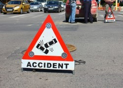

В настоящее время всё чаще граждане используют такой инструмент улучшения жилищных условий как участие в долевом строительстве. Кризисные волны 2009 и 2015 годов привнесли свои коррективы: достаточно большое количество застройщиков либо нарушили сроки строительства, либо объявили себя банкротами. В таких случаях остро стоит вопрос: «Что делать?». Ответ, как ни парадоксально, прост: «Идти к юристу». Как правило, возможно сделать следующее:
-
Потребовать передачи объекта долевого строительства;
-
Взыскать пени и штрафы, в том числе, предусмотренные законом РФ от 07.02.1992 № 2300-1 «О защите прав потребителей».
-
Расторгнуть договор участия в долевом строительстве с выплатой процентов за пользование денежными средствами.
-
Взыскать Ваши убытки, причинённые ненадлежащим исполнением застройщиком своих обязательств.
Главное в таких случаях действовать и не поддаваться на уговоры застройщика. Мы гарантируем высокую вероятность удовлетворения требований клиента и делаем всё возможно для достижения положительного результата

Помощь при ДТП
Большинство автомобилистов после ДТП сталкиваются с одними и теми же проблемами:
- Страховые компании не торопятся выполнять договорные обязательства. Сумма выплаты по договору может быть недостаточной, а порой страховая вовсе отказывается возмещать ущерб - страховые споры.
- Если в ДТП имеются пострадавшие, Вам могут быть предъявлены обвинения в причинении вреда жизни, здоровью, что влечет последующее лишение прав и взыскание ущерба с Вас в исковом производстве.
- Порой, у виновника на момент ДТП может не оказаться действующего страхового полиса ОСАГО, то есть виновник не застраховал свою ответственность в предусмотренном порядке. Вам придется обращаться к специалисту, что бы взыскать с него ущерб - возмещение ущерба.

Земельные споры
Данный вид споров является одним из самых сложных по следующим причинам:
- Большое количество законов и подзаконных актов, регулирующих данную отрасль..
- Отсутствие сложившейся судебной практики.
- В абсолютном большинстве случаев - необходимость проведения различных экспертиз